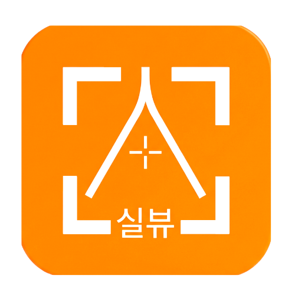

광고 떡칠 이미지 뷰어,
이제 그만 보세요.
웹에서는 설치 없이 바로 사용하고,
Windows에서는 이미지 더블클릭으로 같은 폴더를 쭉 넘겨보세요.
실뷰의 '실'에는 두 가지 뜻이 있습니다 —
실행의 실, 그리고 실속의 실.
군더더기 없이 실속만 담아, 바로 실행되는 뷰어(View).
이미지 하나만 열면,
같은 폴더를 자동으로 이어보기
폴더 업로드나 연결 절차 없이 PC의 이미지를 바로 읽습니다.
탐색기 더블클릭도, 실뷰 안의 이미지 열기도 같은 방식으로 동작합니다.
같은 폴더 자동 이어보기
선택한 이미지가 있는 폴더의 지원 이미지를 불러옵니다. ←/→ 키나 이전·다음 버튼으로 넘기세요.
100%는 화면 맞춤
세로 사진도 위아래가 잘리지 않도록 전체가 들어오는 크기를 100%로 표시합니다.
다음 이미지도 같은 배율
140%로 확대했다면 다음 이미지에서도 140% 유지. 이미지마다 100%로 초기화하지 않습니다.
이미지 열기와 편집은 PC에서 처리하며 원본을 서버에 업로드하지 않습니다. 웹 버전과는 별도 앱이며, Windows 기본 이미지 앱은 설치 후 직접 선택해야 합니다.
지원 형식: JPG · JPEG · JFIF · PNG · GIF · WebP · BMP · AVIF · SVG · ICO
HEIC·TIFF는 이번 버전에서 지원하지 않습니다.
파일 확인 정보 (SHA-256)
90BF0635936952C78F29E66A9A8D31F163BB6965A0463294E2D0E7468FF47CDD
설치하고, 기본 이미지 앱으로
- 설치 파일 다운로드 → 실행위 버튼으로 실뷰 1.0.0 설치 파일을 내려받아 설치합니다. 바탕화면 또는 시작 메뉴에서 실뷰를 실행할 수 있습니다.
- 이미지 우클릭 → 연결 프로그램탐색기에서 PNG/JPG 파일을 우클릭한 뒤 연결 프로그램 → 다른 앱 선택 → 실뷰 → 항상을 선택합니다. Windows 버전에 따라 ‘항상 이 앱을 사용’ 확인란으로 표시될 수 있습니다.
- 파일 형식별로 한 번씩 선택PNG와 JPG 등 자주 사용하는 형식을 각각 설정하세요. 앱의 파일 → 기본 이미지 앱 설정에서 Windows 설정을 열어 변경할 수도 있습니다.
- 이제 더블클릭으로 열고, 방향키로 넘기기한 장만 열어도 같은 폴더의 이미지 목록이 나타납니다. 실뷰가 이미 실행 중이면 기존 창에서 새 파일로 전환합니다.
‘실뷰’가 목록에 없다면 ‘PC에서 앱 선택’으로 설치 폴더의 실뷰.exe를 지정하세요. 현재 설치 파일은 코드 서명되지 않아 Windows에서 게시자 확인 경고가 표시될 수 있습니다. 출처가 이 상세페이지인지 확인하고, 보안 프로그램이 차단하면 실행을 중단하세요.
사진 한 장 보려다
광고에 둘러싸인 적
무료 뷰어라고 깔았더니, 정작 화면 절반이 광고.
딱 필요한 것만, 실뷰
광고도, 회원가입도 없습니다.
설치 없이 쓰는 웹, 탐색기와 연결되는 Windows 앱 중 선택하세요.
복잡한 포토샵은 그만,
클릭 몇 번이면 충분
업무용 캡처, 개인정보 가리기, 간단한 강조 표시.
🔒 모자이크 블러 — 가장 자주 쓰는 기능
이름, 전화번호, 계좌, 얼굴… 가리고 싶은 곳을 드래그하면 즉시 모자이크 처리.
캡처 공유 전 개인정보 보호에 딱.
도형 삽입
사각형·원·선·화살표로 핵심을 콕 집어 강조.
텍스트 삽입
설명·메모·라벨을 원하는 색으로 자유롭게.
자르기 · 크기 조절
드래그로 영역 선택 후 자동 저장. 리사이즈도 한 번에.
회전 · 좌우반전
90° 회전과 미러링으로 사진 방향을 한 번에.
🖱 크롬 확장 — 웹 이미지 우클릭 한 번
아무 웹페이지에서나 이미지를 우클릭 → "패널에 담기" 또는 "새 탭으로 열기".
저장·업로드 없이 바로 보고 편집하세요.
왜 실뷰일까요?
이제, 광고 없이
사진을 봅니다.
같은 폴더를 쭉 보려면 Windows 설치형.
설치 없이 빠르게 쓰려면 웹 버전을 선택하세요.